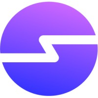
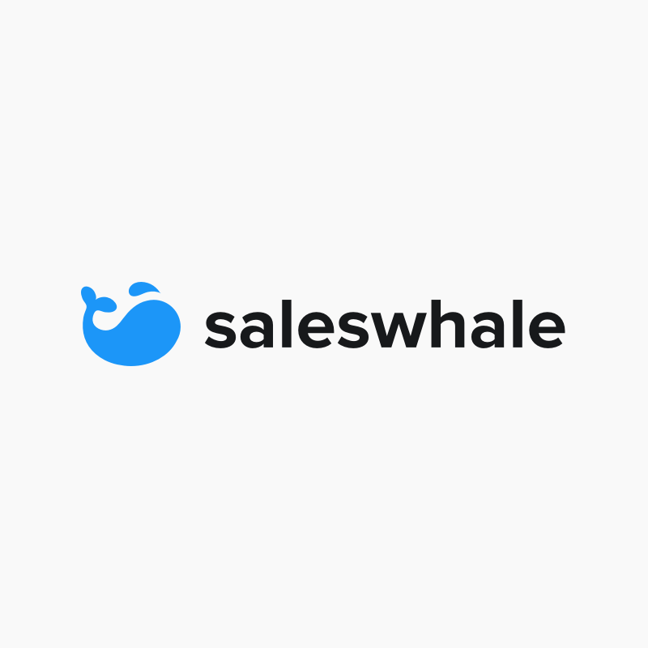
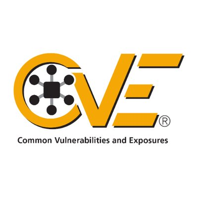

Full Time Job
Spresso.AI
I spent 4+ years building ecommerce platforms in Typescript and Node.js
View More

I spent 4+ years building ecommerce platforms in Typescript and Node.js
View More
I spent 4 months (May 2019 - Aug 2019) interning as a backend developer at a Singapore based startup called Saleswhale.
View More
As an extension to our research paper, we applied for extensions to exisiting CVEs, which were accepted by the National Institute of Standards and Technology (NIST) and the MITRE Corporation.
View MoreComputer Science and Design (CSD)
Graduation Date: September 2020
I was the vice-president of SUTD's IEEE student branch from 2017 to 2018, leading and training over 105 student members.
View MoreI spent 4 months on a summer exchange to ZheJiang University to attend a special curriculum and to take part in a project mentored by Dr Zhang KeJun
View MoreDesigned and built a help ticket management system that allowed users to submit tickets, and allowed administrators to sort, manage, and resolve tickets for Accenture.
View MoreTogether with a team involving professors and postdoctoral researchers, we wrote a paper exploring a clone-based approach for detecting vulnerabilities in cryptocurrencies, mainly through the analysis of existing Bitcoin vulnerabilities.
View MoreA potential solution to imperfect information regarding the usage of public spaces. Uses computer vision to detect the number of people using each public space, which can then be viewed through an app.
View MoreAs part of a cybersecurity course, my team and I created a challenge for a jeopardy style Capture The Flag (CTF). The challenge includes basic CTF skills including cryptography and stenography.
View MoreeMello is an eBook reader that employs machine learning and natural language processing to integrate instrumental music into children’s books.
View More